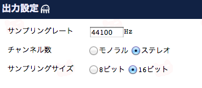
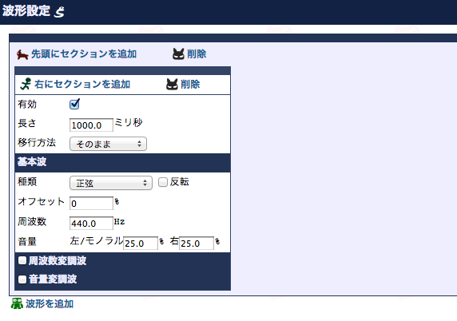
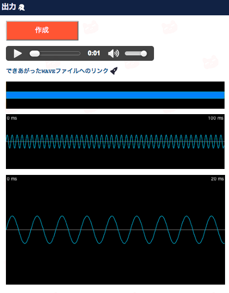
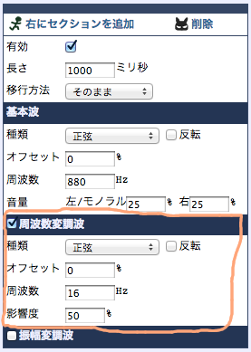

TanToneはブラウザ上で音を作れるサイトです。波形の形や周波数などを指定して音を作ります。作った音はWAVEファイルとして保存できるので、スマートフォンアプリの効果音などに使えます。Google ChromeとSafariでしか動かないっぽいです。
TanToneはブラウザ上で音を作れるサイトです。波形の形や周波数などを指定して音を作ります。作った音はWAVEファイルとして保存できるので、スマートフォンアプリの効果音などに使えます。Google ChromeとSafariでしか動かないっぽいです。
WAVEファイル全体の出力の設定をします。
1秒間あたりのサンプル数です。音質に影響します。出力するデバイスによって変えるといいかも。
モノラル(1チャンネル)、ステレオ(2チャンネル)を選択します。
1サンプルのビット数です。今のところ8ビットと16ビットだけ対応してます。
波形の設定をします。ここをいじって音を作成します。
1つの波形は1つ以上のセクションを持っています。セクションはそれぞれ長さや波の種類や周波数を決めることができます。セクションを追加すると時間によって変化する音が作れます。また、波形を追加すると複数の音を同時にならすことができます。
このチェックを外すと出力時にこのセクションが無視されます。いろいろ試したいときに使います。
このセクションの長さです。全てのセクションの合計が波形の長さになり、一番長い波形の長さがWAVEファイルの長さになります。
次のセクションへどう移行していくかを決めます。「そのまま」だと次のセクションの影響を受けずに同じ音を長さ分鳴らします。「だんだん次へ」だと徐々に次のセクションの音に変化していき、長さ分が終った時点では完全に次のセクションの音に変わっています。オルガンのように独立した音を順番に鳴らしたいときには「そのまま」、テルミンみたいに無段階な音にしたいときには「だんだん次へ」にします。
波の種類です。ここで選んだものによって基本の音色が変わります。詳細はこちら。
このチェックを付けると波が上下反転します。
波の周期のズレを決めます。100%で1周します。正弦波を25%オフセットすると波の一番高い位置からはじまります。
音の高さです。1秒間に波が何周するかを表します。440Hzは「ラ」の音(A4)で、倍(880Hz)にすると1オクターブ高い「ラ」の音(A5)、半分(220Hz)にすると1オクターブ低い「ラ」の音(A3)になります。
音の大きさです。100%が最大音量です。ステレオの場合、左右の音量を別々に指定できます。モノラルの場合は右音量は無視されます。実際に聴こえる音の大きさは周波数や波形の種類によって変わります。
周波数を定期的に変更することができます。面白い音が作れます。詳しくはこちら。
音量を定期的に変更することができます。面白い音が作れます。詳しくはこちら。
作った音を確認できます。
出力設定と波形設定からWAVEファイルを作ります。ボタンが押された時点で入力されている情報がURLにくっつくので、そのままブックマークすれば編集中の状態を保存しておけます。
このリンクの先を保存するとWAVEファイルをダウンロードできます。
音の波形です。上から音全体の波形、100ミリ秒分に拡大したもの、20ミリ秒分に拡大したものです。マウスで表示する位置を変えられます。
「作成」ボタンを押すと、入力されている情報が現在のURLにくっつきます。それをそのままブックマークしたり、どこかにコピペしておくと、そのURLを開いたときに編集中の状態を復元できます。作った波形を公開するのもらくちんです。
無音です。
正弦波(サイン波)です。基本的な波のひとつで、音叉の音に近いらしいです。柔らかい感じの音です。
パルス波(振幅が最大か最小だけの波)のひとつです。振幅が最大になる部分の幅(パルス幅)が1/8のものです。尖った感じの音で、ファミコンっぽいです。
パルス波のひとつです。パルス幅が1/4のものです。1/8パルス波よりは優しい音です。ゲームボーイっぽいです。
パルス波のひとつです。パルス幅が1/3のものです。
基本的な波のひとつです。1/2のパルス波です。他のパルス波より優しい感じです。
のこぎりの刃みたいな形の基本的な波のひとつです。管楽器っぽい気がします。
三角形の波です。正弦波と矩形波の間みたいな音です。リコーダーっぽい。
三角波の頂点を左にずらしたものです。左右の割合は1:2です。少しのこぎり波に近くなった感じです。
三角波の頂点をもっと左にずらしたものです。左右の割合は1:3です。
三角波の頂点をさらに左にずらしたものです。左右の割合は1:4です。
ランダムな波です。そのまま使えばノイズになります。加工すれば風の音になったりしますし、他の音に少し混ぜると自然な音色になったりします。
ランダムの場合、周波数が440Hzでもラの音になりません。周波数を低くすれば音は低くなりますが、周波数を高くしても音はある程度までしか高くなりません。
「作成」を押すたびに波が変わったりはしません(音が変わっちゃうと困るので)。なので4種類のランダム波を用意しました。うしろに付いてる数字はランダムシードです。
歯車の形をした波です。三角波と矩形波の間のような音になります。
山が二つある正弦波です。三角波に近いですが、もっとハッキリした音になります。
階段状の波です。1/4パルス波をすこし柔らかくした感じの音になります。
「先頭にセクションを追加」または「右にセクションを追加」を押すとセクションを増やすことができます。セクションを増やすと違う音を順番に鳴らすことができます。
上の場合だと、周波数220Hzの音が1秒間鳴ったあと、880Hzの音が1秒間鳴ります。(設定した状態)
セクションの「移行方法」を「だんだん次へ」にすると、そのセクションの音が徐々に次のセクションの音に変化していきます。
上の例は周波数が220Hzから880Hzまで変化する音です。1秒間かけてだんだん音が高くなり、2オクターブ上がるとそこから1秒間同じ音がなります。(設定した状態)
右側のセクションの時間を0にすれば、周波数が上がりきったところで音が終ります。
周波数ではなく音量を0に変化させると、音をフェードアウトさせることができます。その際、音量0のセクションは時間を0に設定します。
音が1秒間かけてフェードアウトします。(設定した状態)
波形はこんな形。
左側に「そのまま」のセクションを追加すれば、フェードアウトの時間を調整できます。
また、左右のセクションの音量を入れ替えればフェードインする音が作れます。
周波数変調波を有効にすると、一定周期で周波数を変化させることができます。
上の波形は変調波を有効にしてない状態です。これに対して周波数変調波を有効にすると・・・
このように周波数の高い部分(赤)と低い部分(青)ができあがります。
周波数変調波を有効にするには、セクションの「周波数変調波」のチェックをオンにします。チェックすると下のような周波数変調波の設定項目が表示されます。
変調波の形を決めます。正弦波なら滑らかに変化するようになり、矩形波なら即座に変化するようになります。
このチェックを付けると、変調による周波数の高低を入れ替わります。
変調波の周期のズレを決めます。
変調の頻度です。1だと1秒間に波の1周期分の変調が起こります。低い(30くらいまで)だと音の変化がわかりやすく、高いとひとつの音が鳴っているように聴こえます。
元の波に対してどれだけ周波数を変化させるかを決めます。0%の場合は変調波を無効にした場合と同じで、50%なら元の周波数の半分から1.5倍の間で変化し、100%なら0から元の周波数の2倍の間で変化します。
440Hzの正弦波に対して2Hzの正弦波で変調：UFOが飛んでるような効果音になります
880Hzの三角波に対して8Hzの階段波で変調：ゲームのスロットマシンが回ってる時みたいな音になります
振幅変調波を有効にすると、一定周期で音量を変化させることができます。

振幅変調波を有効にするには、セクションの「振幅変調波」のチェックをオンにします。
設定項目は周波数変調波と同じで、元の波の周波数の代わりに音量に影響を与えます。
440Hzの正弦波に対して16Hzの正弦波で変調：電話の呼び出し音みたいな音になります
ノイズに対して16Hzの1/4パルス波で変調：工事現場っぽい音になります
「波形の追加」を押すと波形を追加できます。波形が複数ある場合、全ての波形を足し合わせた音が作られます。
上の場合、周波数880Hz(高いラ)の音と周波数220Hz(低いラ)の音が同時に鳴るように聴こえます。(設定した状態)
できあがる波はこんな形です。
音量を左右別々に設定できるのを応用して、波形毎に左右どちらかの音量を0にすると左右から別々の音を鳴らすことができます。
上の場合、左側からは周波数220Hzの音が聴こえ、右側からは周波数880Hzの音が聴こえます。イヤホンをするとわかりやすいです。(設定した状態)
表示される波はこんなようになります。左側の音は緑色、右側の音は青色で表示されます。